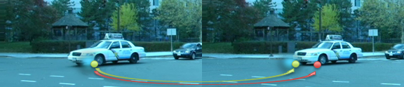

Adherent Raindrop Detection and Removal in Video
Oral presentation in ACCV 2014
Shaodi You, Robby T. Tan, Rei Kawakami, Yasuhiro Makaigawa and Katsushi Ikeuchi
pdf (3.1MB)
Video demo (17MB)
Slides (48MB)
Poster (3.1MB)
BibTex
Abstract: Raindrops adhered to a windscreen or window glass can significantly degrade the visibility of a scene. Detecting and removing raindrops will, therefore, benefit many computer vision applications, particularly outdoor surveillance systems and intelligent vehicle systems. In this paper, a method that automatically detects and removes adherent raindrops is introduced. The core idea is to exploit the local spatio-temporal derivatives of raindrops. First, it detects raindrops based on the motion and the intensity temporal derivatives of the input video. Second, relying on an analysis that some areas of a raindrop completely occludes the scene, yet the remaining areas occludes only partially, the method removes the two types of areas separately. For partially occluding areas, it restores them by retrieving as much as possible information of the scene, namely, by solving a blending function on the detected partially occluding areas using the temporal intensity change. For completely occluding areas, it recovers them by using a video completion technique. Experimental results using various real videos show the ef-fectiveness of the proposed method.
Thick and thin raindrops : Unlike some existing methods, in this work, we introduce a novel detection method applicable for both thick and thin raindrops as well as raindrops of any size, shape, glare, and level of blurring. We call a raindrop thick when we cannot see the objects behind it, and thin, when it is sufficiently blurred, but still allows us to partially see the objects behind it.
Raindrop imagery model : Unlike opaque objects, raindrops can look different in different environments due to the focus of the camera on the environment.
Spatio-temporal space and dense trajectories: Given a video sequence, we can form a 3D
spatio-temporal space. We generate trajectories in a forward motion, from the
first to the last frame. In this case occlusions by raindrops or other objects might
cause some trajectories to stop, and consequently some areas in some frames
will not have trajectories. To cover these areas, we also generate trajectories in
a backward motion.
Dense trajectories on rainy scenes : In our findings, with
regard to o cclusions, a tra jectory can encounter the following events: (A) it is
o ccluded by a solid non-raindrop ob ject and drifted; (B) it is o c clude d by a thick
raindrop and drifted; (C) it is o ccluded by a thin raindrop and drifted; and (D)
it is o cc luded by a thin raindrop but not drifted.

Motion inconsitency : When a point is covered by a thin raindrop, it has two correspondences in other frames: the raindrop and the covered object. The causes incorrect tracking for optical flow that assumes only one correspondence.
Appearance along trajectories, appearace inconsitency and sharpness: all four events might
generate appearance changes, particularly for events A, B and C. We calculate
the appearance consistency for node using the difference of SIFT features. Similarly, we can evaluate the patch sharpness along the trajectory.
Label raindrops using MRF: The detection of raindrops can be described as a binary labeling problem, where
for given a frame, the labels are raindrop and non-raindrop. Similarly, the mixture level can be described as a multiple labeling problem. The labeling can be
done in the framework of Markov random fields (MRFs).
Detection Results
Raindrop Removal Results
Motion field completion results